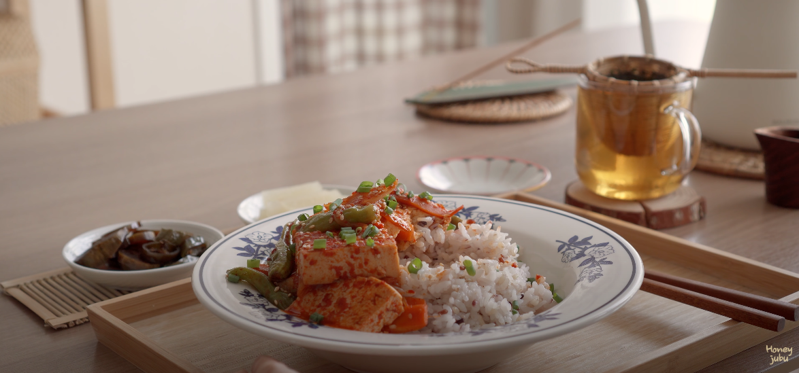

Stewed Tofu

Description
A simple, easy-to-make Korean dish is the stewed tofu that has an appealing taste. For those who
want a mild heat, you can dine on this recipe and be satisfied. I recommend you try this dish
with some rice.
Obtained by Youtube Channel | Honeyjubu
Ingredients and Measurements
- components tofu
- components carrots
- components onions
- components green beans
- seasoning 2T soy sauce
- seasoning 1T sugar
- seasoning 1/3 cup of water
- seasoning 2T red pepper powder
- seasoning some sesame seed
Steps to the Procedure
- Begin by cutting listed ingredients in the components
section
- Combine and mix listed ingredients in the seasoning section
- Put some olive oil on the pan and fry the vegetables to partially cooked
- Then, you can proceed to add the tofu and seasoning to stir-fry
- Finally, create the dish. You can have this rice or just by itself.